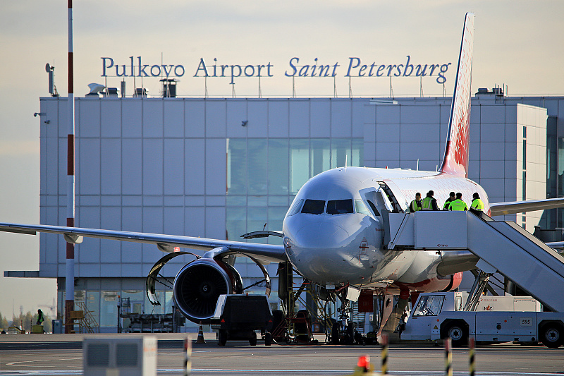
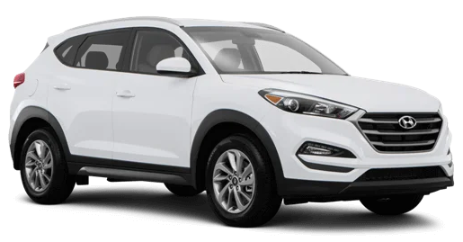
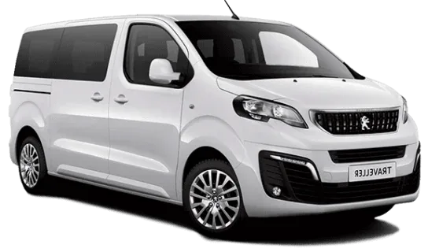
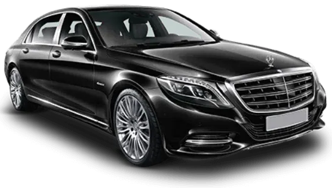
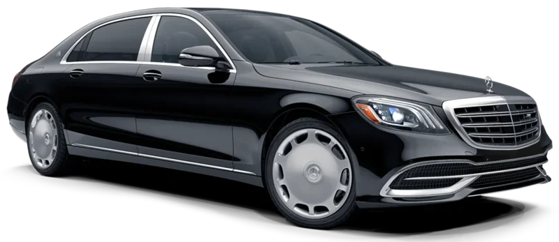

Официальный трансфер в Санкт-Петербурге
Идеальный способ заказать такси в Санкт-Петербурге:
трансфер из аэропорта Пулково, Пушкин, Петергоф, городское такси или услуги шофера с официальным бизнесом,
базирующимся в Санкт-Петербурге, Россия.
Мы гарантируем комфорт и безопасность, фиксированные тарифы, различные варианты оплаты
и круглосуточное обслуживание на английском языке.
Заказывайте трансфер из Санкт-Петербурга онлайн прямо сейчас!
Трансфер Санкт-петербурга
St.Petersburg Taxi - это англоязычная круглосуточная служба такси,
которая обеспечивает частные трансферы из международного аэропорта Пулково,
в железнодорожные и автобусные вокзалы, речные и морские круизные порты,
отели в центре города, театры и музеи.
Онлайн-бронирование, выбор различных способов оплаты,
лучшие цены и быстрое подтверждение.
Все трансферы из аэропорта включают услугу
«Встреча и приветствие» в зале прибытия.

Международный аэропорт Санкт-Петербург Пулково такси и трансфер
Помимо трансфера из аэропорта и городского такси, мы с радостью предложим комфортные поездки в далекие пригороды, такие как Пушкин / Царское Село, Павловск, Петергоф / Петродворц.
Воспользуйтесь услугами нашей компании для трансферов в Кронштадт, Гатчину или Igora Drive Racing,
а также для междугородних трансферов в Хельсинки, Таллинн, Великий Новгород, Выборг и Псков.
Наслаждайтесь частной экскурсией по городу или закажите услуги шофера в Санкт-Петербурге и оцените удобство,
комфорт и безопасность внедорожника и микроавтобуса или роскошь Mercedes-Benz S-Class или Mercedes-Maybach.
Минимальная продолжительность аренды шофера - 3 часа, ставка действительна в черте города.
Используйте этот вариант, если хотите за один день посетить Пушкин и Петергоф.
Получайте фиксированные тарифы на такси, бронируйте все трансферы онлайн и выбирайте предпочтительные варианты оплаты:
картой, PayPal или наличными. Вы получите ваучер с подтверждением по электронной почте в течение короткого периода времени.
Для вашего удобства у нас есть множество различных автомобилей: большие внедорожники и универсалы, минивэны и микроавтобусы,
представительские седаны и роскошные лимузины.
Варианты транспортных средств для трансфера из аэропорта Санкт-Петербурга и такси в 2021 году
Внимание: выбирайте подходящий автомобиль для себя и своей группы. В «Санкт-Петербургском такси» есть широкий выбор транспортных средств: от небольшого седана эконом-класса на 2 пассажира до представительского Mercedes S-класса, роскошного Mercedes-Maybach или лимузина Rolls-Royce. От большого внедорожника на 4 пассажира до просторного 6-местного минивэна. Фиксированные тарифы от 7,50 € на человека!
Автомобиль эконом-класса 20 евро за машину
Трансфер из аэропорта Пулково в / из центра города на Renault Logan, Ford Focus или аналогичный для 1-2 пассажиров и 2 багажа.

Автомобиль комфорт-класса 30 евро за машину
Трансфер из аэропорта Пулково в / из центра города на RВнедорожник, Skoda Kodiaq, Pathfinder или аналогичный для 1-4 пассажиров и 4 багажа.

Автомобиль Minivan 50 евро за машину
Трансфер из аэропорта Пулково в / из центра города на Minivan VW, Peugeot или аналогичный на 1-6 пассажиров и 6 мест багажа.

Автомобиль премиум-класса 65 евро за машину
Трансфер из аэропорта Пулково в / из центра города на Mercedes S-класса, BMW7 или аналогичный для 1-3 пассажиров и 3 багажа.

Автомобиль класса люкс 95 евро за машину
Трансфер из аэропорта Пулково в / из центра города на Mercedes - Maybach для 1-3 пассажиров и 3 багажа.
